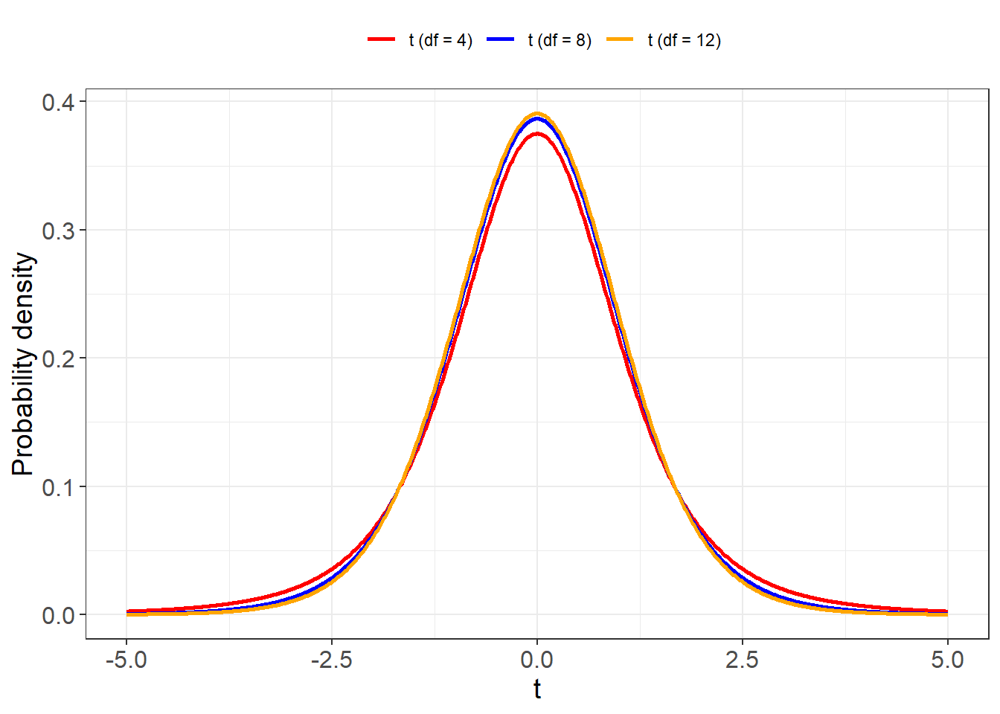

Chapter 11 Central limit theorem
In this chapter we will discuss more fully the margin of errors when estimating the mean of the population distribution with the average. In the design of components, usually a predefined tolerance in the acceptability of the component’s properties is conventionally given for certification. When testing the components with a testing sample, this puts limits to how much variability we can tolerate in the sample average. Statistically, we may set the margin of error such that the probability that the average is within the error is at least a fixed number, usually \(95\%\).
When observing an average of a natural process and some theoretical or gold-standard is known for the mean and variance we can compute the margin of error to have a prediction boundary on where to find the average when we perform the data collection for the sample. Decisions and inferences when the sample data is obtained will be the subject of confidence intervals and hypothesis testing.
Before that, in this chapter and the next chapter, we will first deal with random experiments that are not modeled with the normal distribution. We will discuss how the central limit theorem will allow us to compute the margin of error for any type of distribution if the sample is large.
We will also introduce the t-statistic, for computing the margin of error when the sample is small but the population distribution is normal.
11.1 Margin of error
When deciding whether the error of estimation of \(\mu\) by the sample mean \(\bar{x}\) is large or not, we usually compare it with a predefined tolerance.
The margin of error at \(5\%\) level is the distance from \(\mu\) that captures \(95\%\) of the averages \(\bar{X}\):
\[P(-m \leq \bar{X}-\mu \leq m)=P(\mu-m \leq \bar{X} \leq\mu + m)=0.95\]
This means that \(95\%\) of the outcomes of \(\bar{X}\) from a random sample are a distance \(m\) from \(\mu\).
11.2 Averages of normal variables
We want to know the number \(m\) in the equation
\[P(\mu-m \leq \bar{X} \leq\mu + m)=0.95\]
To solve this equation we need two steps. First, we need to know the distribution of \(\bar{X}\).
- When \(X\) is normal (\(X \sim N(\mu, \sigma^2)\)) then
\[\bar{X} \sim N(\mu, \frac{\sigma^2}{n})\] We then need to standardize \(\bar{X}\). Remember that to standardize a normal variable, we subtract its mean an divide it by its standard deviation.
\[Z=\frac{\bar{X}-E(\bar{X})}{\sqrt{V(\bar{X})}} =\frac{\bar{X}-\mu}{\frac{\sigma}{\sqrt{n}}} \sim N(0,1)\]
\(Z\) is then standard normal. Remember the probability density function for a standard normal variable and its quantiles

- Substituting the mean of \(\bar{X}\) and its standard deviation into the equation for the margin of error, we have:
\(P(\mu-m \leq \bar{X} \leq\mu + m)=P(-\frac{m}{\sigma/\sqrt{n}} \leq \frac{\bar{X}-\mu}{\frac{\sigma}{\sqrt{n}}}\leq\frac{m}{\sigma/\sqrt{n}})\) \[=P(-\frac{m}{\sigma/\sqrt{n}} \leq Z \leq\frac{m}{\sigma/\sqrt{n}})=0.95\]
Compare it with the plot above, where
\[P(-1.96 \leq Z \leq 1.96)=0.95\] Therefore,
\[\frac{m}{\sigma/\sqrt{n}}=1.96\] is the distance from \(z=0\) that captures \(95\%\) of the distribution of the standard normal variable. Threfore, the margin of error at \(5\%\) is
\[m=1.96\frac{\sigma}{\sqrt{n}}\]
The limits of the interval \((-1.96, 1.96)\) for \(Z\) are computed from
\[\Phi^{-1}(0.975)=1.96\]
where \(\Phi^{-1}\) is the inverse of the standard normal distribution (norm.ppf(0.975)), and retrieves the value of \(z\) that has accumulated \(97.5\%\) of probability. \(2.5\%\) are left out at the higher tail of the distribution, that add to the other \(2.5\%\) left out at the left of \(\Phi^{-1}(0.025)=-1.96\), because the distribution is symmetric.
Example (Resistors)
Imagine we want to implement an established manufacturing process for producing \(2.5\,\Omega\) resistors. We want to certify that our implementation is highly capable at the 1% tolerance level. This means that the standard deviation of the implemented process should be no more than one-sixth of \(2.5 \times 0.01\), following the criteria for a so-called Six Sigma process capability (Cp).
In other words:
- The mean resistance should be close to \(2.5\,\Omega\)
- The standard deviation should be less than or equal to \(0.004\,\Omega\)
- Nearly all resistors should fall within the range \((2.49, 2.51)\,\Omega\)
If the specifications of the process have established from previous gold-standard experiments that the resistance follows a normal distribution:
\[ X \sim N(\mu = 2.5, \sigma^2 = 0.004^2) \]
Although large samples are required for formal certification, we take a pilot sample of 10 resistors to quickly test our implementation of the process. Since we will estimate the mean \(\mu\) using the sample mean \(\bar{X}\), and this estimate is subject to sampling variability, we are interested in computing the margin of error at the 5% level for \(\bar{X}\).
The sample mean \(\bar{X}\) has:
- Expected value: \(E(\bar{X}) = \mu = 2.5\)
- Standard error: \[ se= \sqrt{V(\bar{X})} = \frac{\sigma}{\sqrt{n}} = \frac{0.004}{\sqrt{10}} \]
Then, the 95% margin of error is:
\[ m = 1.96 \times \frac{0.004}{\sqrt{10}} = 0.00248 \]
Therefore, we can expect that in 95% of such pilot samples of size 10, the sample mean resistance \(\bar{x}\) will lie within the interval:
\[ (2.5 - 0.00248,\ 2.5 + 0.00248) = (2.49752,\ 2.50248)\,\Omega \]
Obtaining a sample average within the specified interval provides preliminary reassurance that the implementation may meet the required precision, supporting the decision to pursue a larger-scale certification study.
11.3 Central Limit Theorem
We could solve the margin of error because we assumed that that variable \(X\) was normal. What if \(X\) follows any other probability distribution?
Theorem: For any random variable \(X\) with any type of probability function
\[X \sim f(x)\] the standardized statistic
\[Z=\frac{\bar{X}-E(\bar{X})}{\sqrt{V(\bar{X})}}\]
approximates to a standard distribution
\[Z \sim_d N(0,1)\] when \(n\rightarrow \infty\)
Consequence: We can compute probabilities for \(\bar{X}\) if \(n\) is large, using the normal distribution:
\[\bar{X} \sim_{aprox} N(\mu, \frac{\sigma^2}{n})\] This is tipically a good approximation when \(n\geq 30\).
Example (Number of Individuals per Species)
In their foundational work in ecology R.A. Fisher et al. analysed the number of individuals for each moth species that was captured over 4 years at Rothamsted Experimental Station (Rothamsted Research) (R. A. Fisher, Corbet, and Williams 1943).
They showed that most species were observed only once and that fewer species were observed with large number of individuals. While the last model they proposed was a Log-Series model
\[X \sim \frac{-\theta^x}{x\ln(1-\theta)}\]
Where \(X\) is the number of individuals of a species in a survey. The random experiment is to take a survey of a given size, identify a species and count the number of individuals in the species. The Poisson model underestimated rare species but showed that the observed patterns in species abundances can arise from random sampling processes — not necessarily from deterministic biological interactions.

The mean and variance are:
- \(\mu= {\frac {-1}{\ln(1-\theta)}}{\frac {\theta}{1-\theta}}=65.05513\)
- \(\sigma^2= -{\frac {\theta^{2}+\theta\ln(1-\theta)}{(1-\theta)^{2}(\ln(1-\theta))^{2}}}=21071.27\)
Imagine, we go to Rothamsted Research and plan to roll out a campaign of moth collection in a surrounding area for 4 years. We will count each at each station the number of species collected with 1 specimen, 2 specimens, and so on. What would be the expected number of individuals in a randomly chosen species and its margin of error, if we assume that the biodiversity of moths has not changed since Fisher’s time?
Fisher’s mean and the standard error of the average species abundance \(\bar{X}\) assuming that we sample a total of 240 species (as Fisher did):
- \(\mu_{\bar{x}}=65.05513\)
- \(\sigma_{\bar{x}}=\sqrt{\frac{\sigma}{n}}=9.37\)
As \(n \geq 30\)
\[Z=\frac{\bar{X}-\mu_{\bar{x}}}{\sigma_{\bar{x}}}\]
is almost standard normal variable and: \[\bar{X} \sim_{aprox} N(\mu_{\bar{x}}, \sigma_{\bar{x}})\]
The margin of error at \(5\%\) level can be computed again with the standard distribution
\[m=\Phi^{-1}(0.975)\times \sigma_{\bar{x}}=1.96\times 9.37=18.36\]
We can expect \(95\%\) of the averages of the abundance over \(240\) species in four years to fall between \((65.05-18.36, 65.05+18.36)= (46.69, 83.41)\)
If the observed average falls outside this interval, it may indicate a statistically significant change in moth biodiversity since Fisher’s study, assuming the Poisson model and historical parameters still hold.

11.4 Sample sum and CLT
The sample sum is the statistic
\[Y=X_1+X_2+...X_n=\sum_{i=1}^n X_i=n \bar{X}\]
with
- mean \[E(Y)=n\mu\]
- variance \[V(Y)=n\sigma^2\]
The CLT tells us that for any random variable \(X\) with unknown (any type of) distribution
\[X \sim f(x)\]
the standardized statistic
\[Z=\frac{\bar{X}-E(\bar{X})}{\sqrt{V(\bar{X})}}\]
approximates to a standard distribution
\[Z \sim_d N(0,1)\] when \(n\rightarrow \infty\). \(Z\) can also be written as
\[Z=\frac{n\bar{X}-nE(\bar{X})}{\sqrt{n^2V(\bar{X})}}=\frac{Y-E(Y)}{\sqrt{V(Y)}}=\frac{Y-n\mu}{\sqrt{n}\sigma}\]
Consequence: We can compute probabilities for the sample sum \(Y=n\bar{X}\) if \(n\) is large, using the normal distribution:
\[Y \sim_{aprox} N(n\mu, n\sigma^2)\]
Example (De Moivre-Laplace’s insight)
For a Bernoulli trial \(X \sim Bernoulli(p)\), its mean is \(\mu=p\) and variance \(\sigma^2=p(1-p)\).
Now, the sample sum \(Y=n\bar{X}\) is a random variable that counts the number of events with probability \(p\) in a repetition of \(n\) trials, therefore
\[Y \sim Binom(n, p)\] with mean \(E(Y)=np\) and variance \(V(Y)=np(1-p)\). If we apply the CLT for the sample sum of Brenouilli trials then we have
\[Y \sim Binom(n, p) \sim_{aprox} N(np, np(1-p))\] we can then proximate the binomial probability mass function with the normal probability density when \(n\) is big. This approximation is good when both \(np\) and \(n(1-p)\) are greater than \(5\).
The significance of De Moivre-Laplace’s discovery cannot be overstated. It provided a practical method for approximating probabilities of binomial variables using the normal distribution, laying the groundwork for modern statistical inference. More profoundly, it offered a deep insight into how regular patterns observed in continuous (analog) systems can emerge from the randomness of discrete (digital) processes when the sample size is large. An early application of this insight was in genetics, where continuous traits such as height or skin color were explained by the cumulative effect of many discrete mutations. A striking modern example is how the discrete activations of many individual neurons can collectively produce continuous patterns of behavior—an insight that has been fundamental to modeling in artificial intelligence.
11.5 Unknown \(\sigma\)
Gold-standards for the values of the mean are usually established using \(\bar{x}\) large samples sizes, as the law of large numbers tells us that the average will be close to the mean. If we are repeating the experiment in a new sample, the margin of error can be computed with the standard deviation \(s\) of the gold-standard, as an estimate of the variance.
For any random variable \(X\) with any type or unkown distribution
\[X \sim f(x)\]
and unknown variance \(\sigma\), we can still estimate the standard error like
\[\hat{se}=\frac{s}{\sqrt{n}}\] when \(n\) is large and write the standardized statistic
\[Z=\frac{\bar{X}-\mu}{\frac{s}{\sqrt{n}}}\sim N(0,1) \] that allows us to use the margin of error at \(5\%\)
\[m= 1.96 \frac{s}{\sqrt{n}}\] for the average of a new \(n\) sample of the gold-standard experiment.
Example (Pacemaker Prediction)
The Micra Transcatheter Pacemaker is a miniaturized pacemaker. A study of 630 patients, established the expected virtual battery longevity at \(\mu=12.1\) years with standard deviation of \(s=1.71\) (Duray et al. 2017).
If we want to run a new study on 10 new patients and measure the VBL for each of them then the estimated standard error is
\[\hat{se}=\frac{s}{\sqrt{n}}=\frac{1.7}{\sqrt{10}}= 0.53\]
and the margin of error
\[m= 1.96\times se= 1.0388\] thus \(95\%\) of the samples of size 10 will have averages within a year from the gold-standard mean.
11.6 T-statistic
Substitution of the standard deviation \(\sigma\) for the standard deviation of the sample \(s\) is only reasonable when size of the gold-standard sample is large. Small sample expetiments of size \(n\) are often called pilots where both \(\mu\) and \(\sigma^2\) are unknown. In this cases we cannot use the central limit theorem for establishing gold-standards
However, if \(X\) is normal
\[X \sim N(\mu, \sigma^2)\] then the standardized statistic
\[T=\frac{\bar{X}-\mu}{\frac{S}{\sqrt{n}}} \sim t_{n - 1}\]
Follows a \(t\)-distribution with \(n-1\) degrees of freedom, that allow us to compute probabilities on \(\bar{X}\), and obtain a margin of error for the average if we were to repeat the pilot study.
The probability density function (PDF) of the Student’s t-distribution with \(n - 1\) degrees of freedom is given by:
\[ f(t) = C_n \left(1 + \frac{t^2}{n - 1}\right)^{-\frac{n}{2}} \]
where:
- \(C_n = \frac{\Gamma\left(\frac{n}{2}\right)}{\sqrt{(n - 1)\pi} \, \Gamma\left(\frac{n - 1}{2}\right)}\) is a normalizing constant ensuring \(\int_{-\infty}^{\infty} f(t) \, dt = 1\),
- \(\Gamma(x)\) is the gamma function, which generalizes the factorial to real (and complex) numbers.
The t-distribution resembles the standard normal distribution but has heavier tails, reflecting the added uncertainty from estimating the population variance.

To compute the margin of error \(m\) at \(5\%\) level when \(n\) is small, \(\sigma\) unknown but \(X\) normal
\(P(\mu-m \leq \bar{X} \leq\mu + m)=P(-\frac{m}{s/\sqrt{n}} \leq \frac{\bar{X}-\mu}{\frac{s}{\sqrt{n}}} \leq\frac{m}{s/\sqrt{n}})\) \[=P(-\frac{m}{s/\sqrt{n}} \leq T \leq\frac{m}{s/\sqrt{n}})=0.95\]
We use the \(t\)-distribution
\[m=t_{0.025, n-1} \frac{s}{\sqrt{n}}\] where \(t_{0.025, n-1}\) is the value \(T\) that leaves \(2.5\%\) at each side of \(t\)-distribution with \(n-1\) degrees of freedom (\(0.025\)-quantile)
Example (Cables)
A sample of 8 cables was taken to perform a quality control test on the breaking load (in tons) of the cables.
13.34642, 13.32620, 13.01459, 13.10811, 12.96999, 13.55309, 13.75557, 12.62747
The observed mean and standard deviation of the sample were \(\bar{x}=13.21\) and \(s=0.36\). Therefore, the margin of error is \[m=t_{0.025, n-1} \frac{s}{\sqrt{n}}=2.36\times \hat{se}=2.36\frac{0.36}{\sqrt{8}}=0.1\] where \(t_{0.025, n-1}=2.36\).
In subsequent samples of \(8\) cables we can expect \(95\%\) of the averages to fall between \((13.21-0.1,13.21+0.1)\).
Python: t.sf(0.025, 8-1)
R: qt(0.025, 8-1, lower.tail = FALSE)11.7 Questions
1) A magnetic resonance imaging of the brain’s hippocampus has \(100\) pixels. We expect \(90\%\) of the pixels to be white (brain tissue). According to the central limit theorem, what is the probability that the scanning of a patient has at most \(85\%\) of white pixels?
\(\qquad\)a:norm.cdf(0.9, 0.85, sqrt(0.85*0.15)/10); \(\qquad\)b:norm.pdf(0.85, 0.9,
sqrt(0.9*0.1)/10); \(\qquad\)c:norm.cdf(0.85, 0.9, sqrt(0.9*0.1)/10); \(\qquad\)d:norm.pdf(0.9, 0.85, sqrt(0.85*0.15)/10)
2) For a standard normal variable, if we the number \(z_{0.025}\) in the definition of the margin of error \(m=z_{0.025} \frac{\sigma}{\sqrt{n}}\), then it will refer to
\(\qquad\)a: The first quartile; \(\qquad\)b: The number at which the distribution has accumulated \(0.975\) of probability; \(\qquad\)c: The number at which the distribution has accumulated \(0.025\) probability; \(\qquad\)d: The third quartile;
3) The importance of the central limit theorem is that is applyes to the standardization of
\(\qquad\)a: A random variable; \(\qquad\)b: The sample mean of a normal variable; \(\qquad\)c: The sample mean of a random variable; \(\qquad\)d: A normal variable;
11.8 Exercises
11.8.0.1 Exercise 1
An electronic component is needed for the correct functioning of a telescope. It needs to be replaced immediately when it wears out.
The mean life of the component (\(\mu\)) is \(100\) hours and its standard deviation \(\sigma\) is \(30\) hours.
what is the probability that the average of the mean life of \(50\) components is within \(1\) hour from the mean life of a single component? (A: 0.1863)
How many components do we need such that the telescope is operational \(2750\) consecutive hours with at least \(0.95\) probability? (A: 31)
11.8.0.2 Exercise 2
The probability that a particular mutation is found in the population is \(0.4\). If we test \(2000\) people for the mutation:
- What is the probability that the total number of people with the mutation is between \(791\) and \(809\)? (A: 0.31)
hint: Use the CLT with a sample of \(2000\) Bernoulli trials. This is known as the normal approximation of the binomial distribution.
11.8.0.3 Exercise 3
An automated machine fills test tubes with biological samples with mean \(\mu=130\)mg and a standard deviation of \(\sigma=5\)mg. For a random sample of size \(50\)
What is the probability that the sample mean (average) is between \(128\) and \(132\)gr? (A: 0.995)
what is the margin of error at \(5\%\)? (A: 1.385929)
what should be the size of the sample \(n\) such that the margin of error at \(5\%\) is \(1\)? (A: 97)
11.8.0.4 Exercise 4
In the Caribbean, there appears to be an average of \(6\) hurricanes per year. Considering that hurricane formation is a Poisson process, meteorologists plan to estimate the mean time between the formation of two hurricanes. They plan to collect a sample of size \(36\) for the times between two hurricanes.
What is the probability that their sample average is between \(50\) and \(60\) days? (A: 0.385975)
Which should be the sample size such that they have a probability of \(0.025\) that the sample mean is greater than \(70\) days? (A: 169)